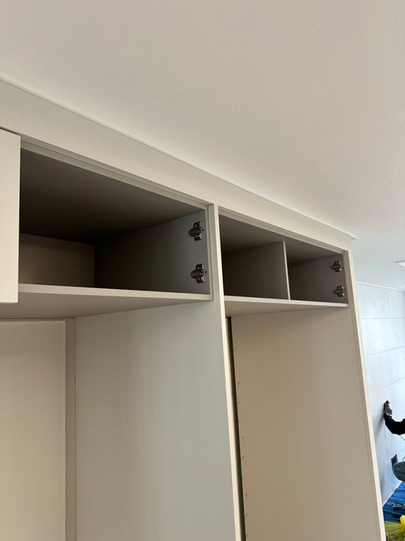
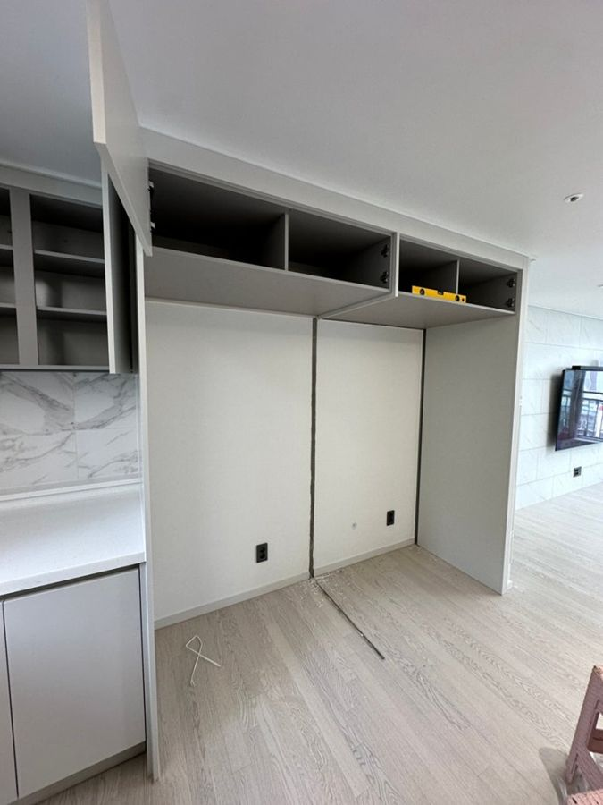
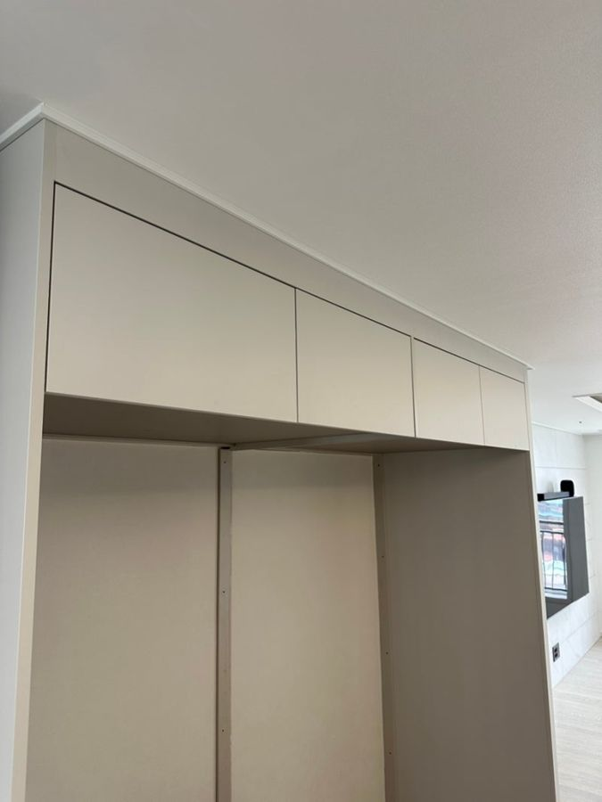
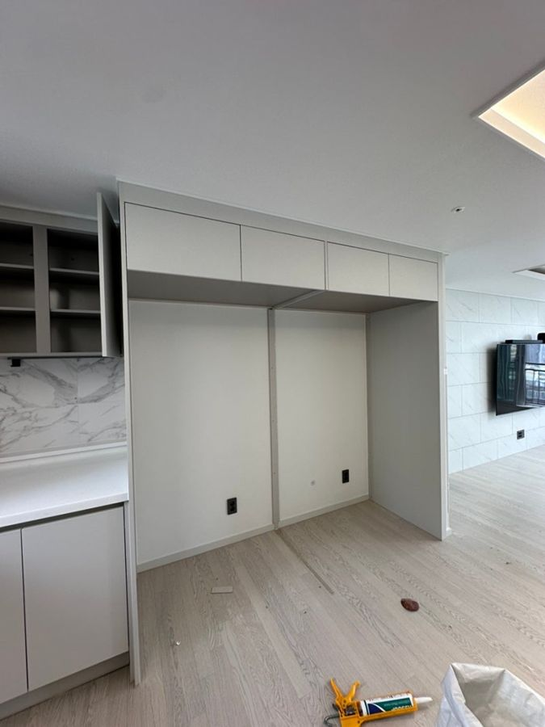

- 지역
- 천안
- 작업
- 냉장고장
- 냉장고
- LG오브제 컬렉션 1+1+1
- 작업일
- 2025.04.12
이런 상황이었어요
입주 전에 LG 오브제 컬렉션 1+1+1 냉장고를 미리 사 두셨어요. 막상 설치하려고 보니 기존 냉장고장 가운데 기둥 때문에 키친핏으로 붙여 넣을 수 없었어요.
이렇게 작업했어요
- 상부장 철거
떨어질 위험이 있어 조심스럽게 기존 상부장을 내렸어요.
- 기둥 철거·천장 보강
중앙 기둥을 빼 상부장 높이로 재단하고, 물건을 넣어도 떨어지지 않게 천장을 보강했어요.
- 상부장·문짝 재설치
수평을 확인하며 상부장을 다시 달고 문짝도 자리 그대로 설치했어요.
- 벽·마루 보수
현장에서 나온 자재로 도배 안 된 부분을, 준비한 마루로 바닥을 보수했어요.
- 기둥판으로 문 제작
냉장고 3개 자리를 빼고 남는 폭은 기존 기둥판을 재단해 문으로 만들었어요.




작업 결과
기둥이 사라져 냉장고 설치 공간이 생겼고 주방도 훨씬 넓고 트여 보이게 됐어요. 고객님이 설치 후 사진도 보내 주셨어요.
알아두면 좋아요
상부장 해체는 떨어질 위험이 있어서 직접 해 보신다면 2명이 함께 하는 게 좋아요.